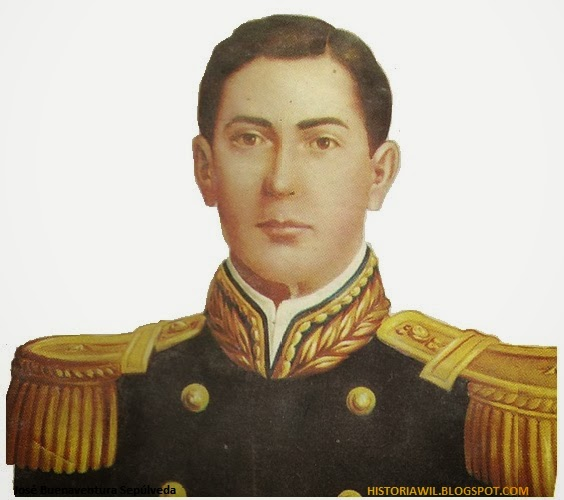
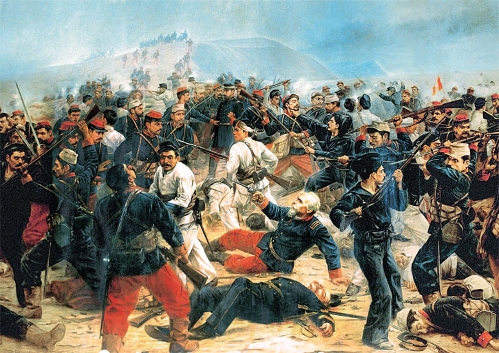
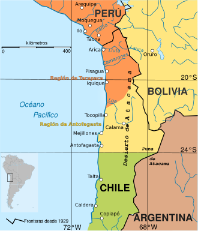
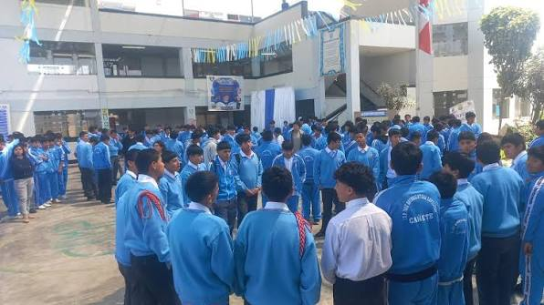
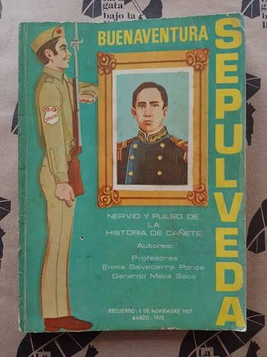
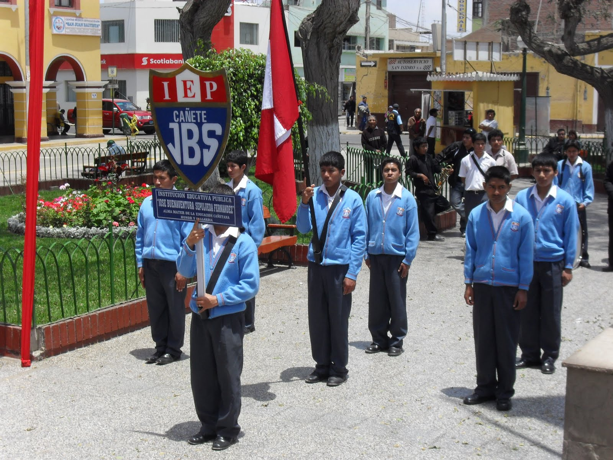
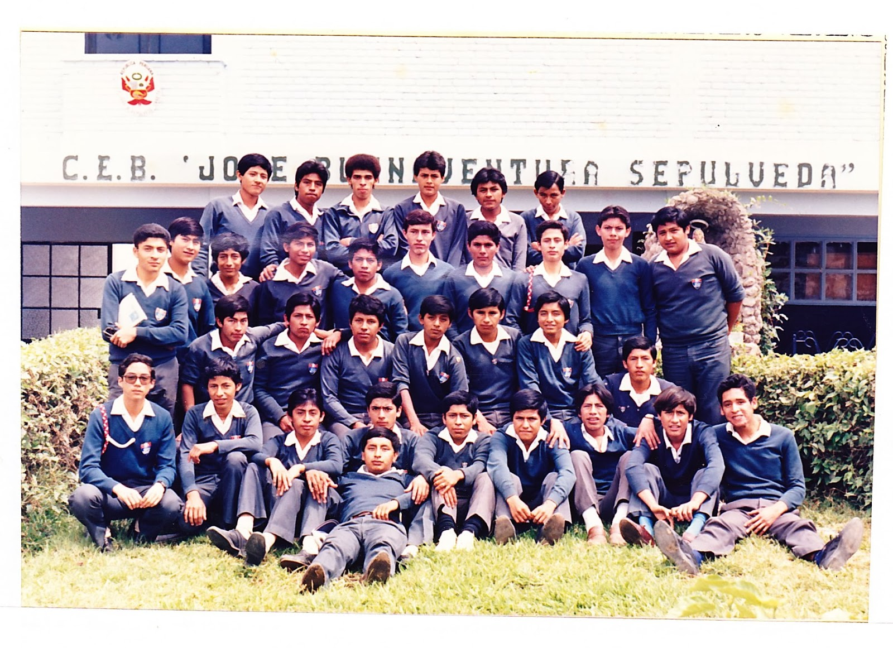
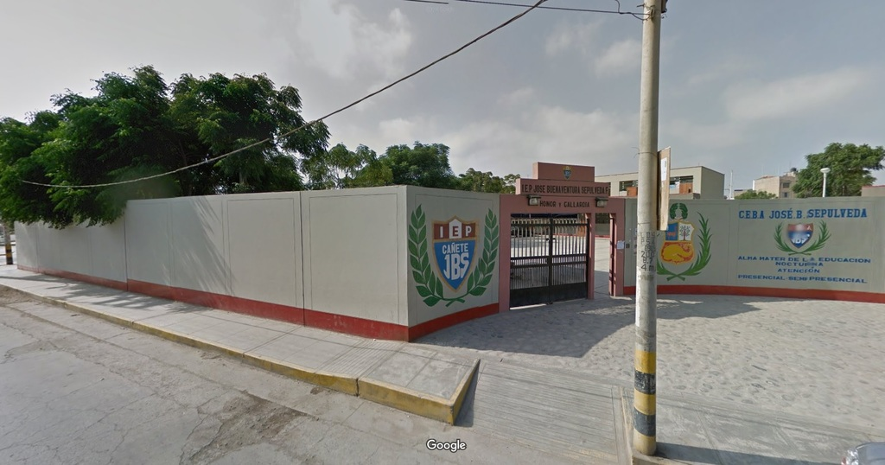

👤 El personaje

José Buenaventura Sepúlveda Fernández
Su nombre forma parte de la historia e identidad de nuestra institución educativa y de la memoria histórica de Cañete.
Fue un militar peruano vinculado a la historia de la Guerra del Pacífico.
📖 ¿Quién fue?
José Buenaventura Sepúlveda Fernández nació en Cañete y tuvo una trayectoria vinculada a la vida militar del Perú durante el siglo XIX.
Su nombre quedó relacionado con la historia de Cañete y posteriormente fue adoptado por la institución educativa que comenzó sus actividades en 1937.
⚔️ Su historia militar
José Buenaventura Sepúlveda participó en el contexto de la Guerra del Pacífico.
Durante este periodo formó parte de las acciones militares desarrolladas por el ejército peruano.
Falleció el 6 de noviembre de 1879 durante la batalla de Germania.

🗺️ Mapa histórico
Ubica los lugares relacionados con la historia de José Buenaventura Sepúlveda y el contexto histórico en el que vivió.

🏫 ¿Por qué el colegio lleva su nombre?
El 1 de abril de 1937 inició sus actividades el colegio particular mixto denominado Teniente Coronel José Buenaventura Sepúlveda Fernández.
La elección de este nombre vinculó desde sus comienzos a la institución con la memoria histórica de Cañete y con la figura de José Buenaventura Sepúlveda.
Con el paso de las generaciones, su nombre se convirtió en parte de la identidad de la comunidad educativa sepulvedana.
🖼️ Galería histórica
Explora algunas imágenes relacionadas con el personaje, la época y la historia de nuestra institución.






💡 ¿Sabías que...?
El colegio no comenzó como una institución pública. Sus actividades iniciaron en 1937 como un colegio particular mixto.